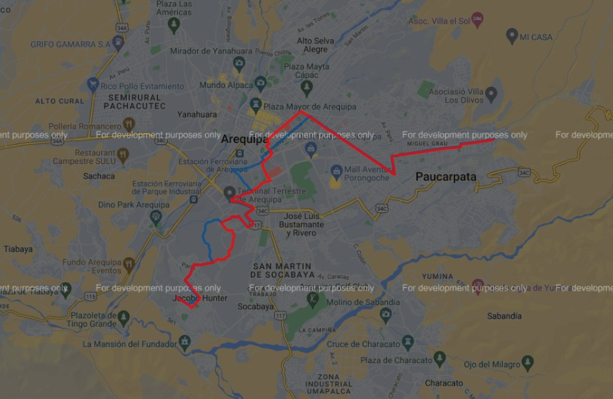

La Parrada
Paraderos de la unidad C2 Cerro Colorado

- Paradero
- Paradero Colectivos Miguel Grau
- Estadio Almirante Miguel Grau
- CAP III Paucarpata - Essalud
- Parque Backus
- COAR Arequipa
- Centro Médico Universitario Pedro P. Diaz
- Centro Médico Universitario Pedro P. Diaz
- Puente Santa Rosa
- GUE Mariano Melgar
- Feria El Altiplano
- Av. Marical Castilla
- UNSA
- Paucarpata
- Colegio Independencia
- UNSA Biomédicas
- Parque del Tren
- Parque de la Madre
- Manzanitos
- Mercado Los Incas
- Terminal Terrestre
- Av. Vidaurrazaga
- Av. De las Convenciones
- Gerencia Regional de Agricultura
- Castillo de Ballón
- Pueblo Tradicional de Bellavista
- Av. Bellavista
- Parque de la Amistad
- Comisaría Hunter
- Mercado de Hunter
- Estadio Juan Velasco Alvarado
- Cueva de La Sirena de Hunter